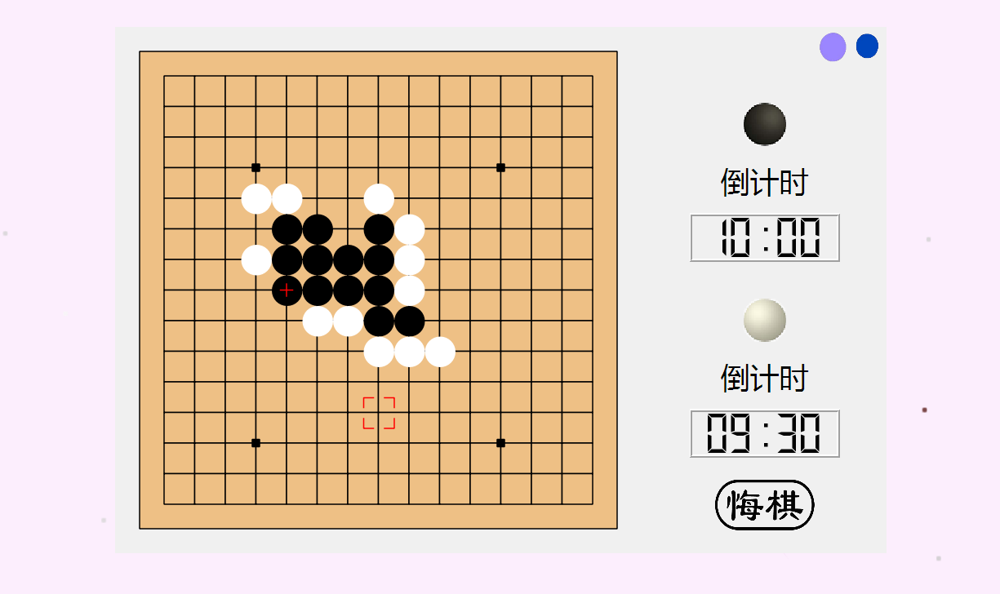
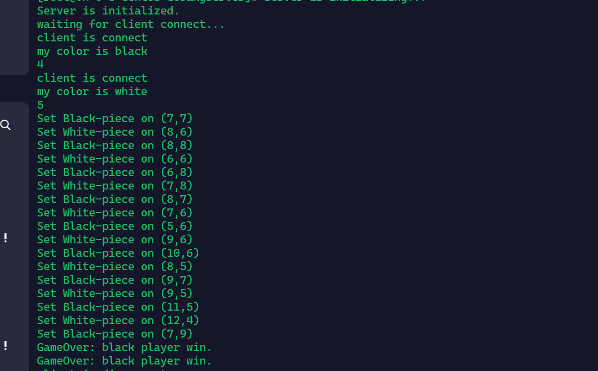

Gobang

第一轮迭代：通过QT在本地绘制五子棋盘,实现单机双人五子棋对战。本地棋盘负责游戏的主要逻辑如落子、胜负判定、切换黑白方落子、限制落子方等，同时负责渲染棋盘上的各个部分。定义了一个函数来接受下棋人数,本地双人为两个人,与电脑下棋时则是默认电脑为黑,故只接受白方下棋。预留的联机对战的时候则是将服务器返回数据的一方作为下棋方,同时采用了mouseReleaseEvent来获取鼠标的点击位置,并用了引导点击,将周围一部分范围也纳入了点击范围,防止出现点击不到准确的点无法下棋的情况。
第二轮迭代：采用客户机/服务器模式（Client/Server）采用客户机/服务器模式（Client/Server）通过socket协议实现服务器端（Server）与客户端（Client）的沟通联系；通过腾讯云租赁VPS，安装Centos
7.6镜像系统，更新服务器gcc库至gcc-12.1.0版本（以此解决gcc版本过低导致的找不到头文件的问题）
